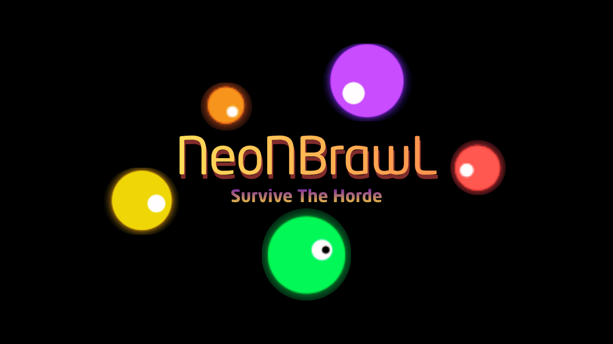

Sobrevive en la arena retro-futurista definitiva. Lucha contra el reloj en una experiencia de alto octanaje.

Enfréntate a oleadas incesantes con diferentes IA y patrones de ataque. Adaptarse es clave.
Mejora tus habilidades entre rondas y construye un personaje capaz de superar la horda infinita.
Compite contra jugadores de todo el mundo y graba tu nombre en la cima de la terminal táctica.
Juega donde quieras. La arena está optimizada para dispositivos móviles con controles táctiles.
Experimenta un entorno de combate que cambia y se expande infinitamente según avanzas.
En una arena donde la estrategia y la rapidez son tus únicas aliadas para sobrevivir al neón.
Entra en un entorno donde la supervivencia es el único objetivo. La arena de NeoNBrawL es un ecosistema retro-futurista dinámico donde las luces de neón cobran vida y el peligro acecha en cada esquina pixelada. Inspirado en la estética cyber-terminal, el campo de batalla reacciona a tus movimientos, desafiándote a dominar mecánicas de combate precisas mientras el reloj avanza implacablemente.
Diseñada con una estructura modular, la arena ofrece una visibilidad táctica única y obstáculos que requieren reflejos instantáneos. Prepárate para una experiencia de juego pura, donde la atmósfera de neón-noir se mezcla con la acción frenética de un HUD táctico avanzado de supervivencia.